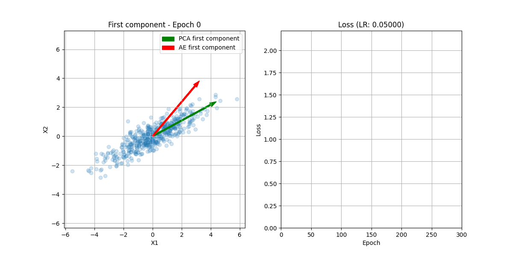

PCA is equivalent to a Linear Autoencoder
Content
Our objective is to compact the representation of data while minimizing the information loss using linear transformations.
Principal Component Analysis (PCA)
Given $n$ data vector $\{x_1, \dots, x_n\} \in \mathbb{R}^m$, assuming that are mean centered, and given a target number of dimensions $k < m$. PCA finds an orthonormal basis $\{u_1, \dots, u_k\} \in \mathbb{R}^m$ that explains most of the variation of the projected data. Let $U \in \mathbb{R}^{m \times k}$ the matrix whose columns are $u_j \in \mathbb{R}^m$ and $X \in \mathbb{R}^{m \times n}$ is a matrix whose columns are the data vector $x_j \in \mathbb{R}^m$.
$U$ encodes the original data $X$ into a lower dimension $z = U^TX$, $z_j= u^T_j x_j$. How do we choose $U$? There are two main approaches:
- Reconstruction error: The reconstruction data is $U (U^T X) = \tilde{X}$, therefore we want to minimize $||X - \tilde{X}||$ for some norm (we’ll see that later). Therefore, we want to minimize the reconstruction error
- Projected variance: Since the data is mean centered, $\hat{\mathbb{E}}[X] = 0$, we want to maximize the variance of the projected data
Actually, these two approaches are equivalent. By the Pythagorean decomposition, given a vector $x \in \mathbb{R}^m$,
$$ x = UU^Tx + (I - UU^T)x $$For simplicity, let’s consider $k=1$, following the second approach we want to find the direction where the variance of the projected data is maximized. The columns vectors of $U$ must be orthonormal $(U^T U = I_k)$ to avoid degenerate solutions $(\|u\|=\infty)$. Take into account that since $U$ is not a square matrix, this doesn’t imply that $UU^T = I_m$, $UU^T$ will be a projection matrix into a $k$-dimensional subspace.
$$ \begin{aligned} &\max_{\lVert \mathbf{u}\rVert=1} \hat{\mathbb{E}} \Big[ \big( \mathbf{u}^\top \mathbf{x} \big)^2 \Big] \\\ &= \max_{\|\mathbf{u}\|=1} \frac{1}{n} \sum_{i=1}^n \big( \mathbf{u}^\top \mathbf{x}_i \big)^2 \\\ &= \max\_{\lVert \mathbf{u} \rVert =1} \frac{1}{n} \lVert \mathbf{u}^\top \mathbf{X} \rVert^2 \\\ &= \max\_{\|\mathbf{u}\|=1} \mathbf{u}^\top \Big( \frac{1}{n} \mathbf{X} \mathbf{X}^\top \Big) \mathbf{u} \\\ &= \text{largest eigenvalue of } S \overset{\text{def}}{=} \frac{1}{n} \mathbf{X} \mathbf{X}^\top \\\ &\text{where } S \text{ is the sample covariance matrix of the data.} \end{aligned} $$Because the variance of the projected data (in the direction of $u$) is given by:
$$ \frac{1}{n} \sum_{i=1}^n (u^T x_i - u^T \bar{x})^2 = u^T S u $$Since $u^T u = \| u\|_2^2 = 1$, the optimization problem is equivalent to
$$ \begin{aligned} & \max_u && u^T S u \\\ & \text{subject to} && \lVert u\rVert_2^2 = 1, \quad u \in \mathbb{R}^k \end{aligned} $$The Lagrangian of this problem is $\mathcal{L}(u) = u^T S u - \lambda(u^T u - 1)$, where $\lambda$ is the Lagrange multiplier. The gradient of $\mathcal{L}(u)$ with respect to $u$ is:
$$ \frac{\partial \mathcal{L} (u)}{\partial u} = S u - \lambda u $$Therefore, $\frac{\partial \mathcal{L} (u)}{\partial u} = 0 \leftrightarrow Su = \lambda u$. Since $u \neq 0$, $\lambda$ is a eigenvalue. In the optimization problem, we have now
$$ \begin{aligned} & \max_u && \lambda u^T u \\\ & \text{subject to} && \|u\|_2^2 = 1, \quad Su = \lambda u \quad u \in \mathbb{R}^k \\ \end{aligned} $$Since $u^T u = \|u\|_2^2 = 1$, we just want to find the largest eigenvalue of the covariance matrix $S$.
By induction, it can be easily proved that we want to project the data in $k$-dimensional space, we need to find the $k$ eigenvectors of $S$ associated with the $k$ largest eigenvalues. This would be done supposing it holds for some general value $k$, and showing it consequently holds for $k+1$, imposing the orthonormality of the eigenvectors in the Lagrange formulation (see Section 16.1.2 from Bishop’s Deep Learning book, I really recommend this book ☺️).
Since $S$ is a symmetric positive semidefinite matrix, it has some nice propertities: we know there is an eigenvalue decomposition of the form $S = Q \Lambda Q^T$, where $Q$ is an orthogonal matrix ($QQ^T = I$) and $\Lambda$ is a diagonal matrix with nonnegative eintries $\lambda_i$ such that $\lambda_1 \geq \lambda_2 \geq \dots \geq \lambda_k \geq 0$. The objective function is then $u^T S u = u^T Q \Lambda Q^T u = w^t \Lambda w = \sum_{i=1}^k \lambda_i w_i^2$, which is constrained to $\sum_{i=1}^k w_i^2 = 1$ since $\|w\|_2 = \|Q^Tu\|_2 = \|u\|_2 = 1$.
Since $\lambda_1 \geq \lambda_i$, $\forall i \neq 1$, we have that $w^* = e_1 = (1,0,\dots,0)\in \mathbb{R}^k$. Therefore, $u^* = Q e_1 = q_1$, the first column of $Q$ (the eigenvector corresponding to the largest eigenvalue of $S$). The rest of the principal component vectors can be found by solving a sequence of similar optimization problems with the additional constraint that the solution must be orthogonal to all the previous solutions in the sequence. The solution of the $i-th$ problem is, inductively, $q_i$ (the $i-th$ eigenvector of $S$). In practice, $SVD$ already gives us the orthonormal basis we are looking for.
Note that $u \perp (x_i - uu^Tx_i) = 0$ by the Pythagorean decomposition
Taking expectations
$$ \hat{\mathbb{E}}[\|x\|^2] = \hat{\mathbb{E}}[\|U^Tx\|^2] + \hat{\mathbb{E}}[\|x-UU^Tx\|^2] $$We can see that minimizing the reconstruction error is equivalent to maximizing the captured variance.
$$ \sum_{i=1}^n \| x_i - uu^T x_i \|^2 = \sum_{i=1}^n (\|x_i\|^2 - (u^T x_i)^2) = constant - \sum_{i=1}^n (u^Tx_i)^2 = constant - \|u^T X\|^2 $$Singular Value Decomposition (SVD)
Let $X$ be the real $m \times n$ matrix of rank $r$, $I_r$ the $r \times r$ identity matrix. A singular value decomposition of $X$ is $X = U \Sigma V^T$ where:
- $U \in \mathcal{M}_{m\times r}(\mathbb{R})$ such that $U^T U = I_r$. Note that the columns $\{u_1,\dots,u_r\}$ form an orthonormal set.
- $V \in \mathcal{M}_{n \times r}(\mathbb{R})$ such that $V^T V = I_r$. Note that the columns $\{v_1,\dots, v_r\}$ form an orthonormal set.
- $\Sigma = \begin{pmatrix} \sigma_1 & 0 & \cdots & 0 \\\ 0 & \sigma_2 & \cdots & 0 \\\ \vdots & \vdots & \ddots & \vdots \\\ 0 & 0 & \cdots & \sigma_r \\\ \end{pmatrix}$ where $\sigma_1 \geq \dots \geq \sigma_r > 0$
Every matrix $X \in \mathcal{M}_{m\times n}(\mathbb{R})$ has an SVD.
Since $u_i \in \mathbb{R}^{m \times 1}$ and $v_i^T \in \mathbb{R}^{1 \times n}$, $X$ can be expressed as
$$ X = \sum_{i=1}^r \sigma_i u_i v_i^T $$We can extend $U$ to an $m \times m$ orthogonal matrix $\hat{U}$ by adding $m-r$ extra columns, we can expand $V$ to an $n \times n$ orthogonal matrix $\hat{V}$ adding $n-r$ extra columns, and we can expand $\Sigma$ to an $m \times n$ matrix $\hat{\Sigma}$ by adding extra entries that are all zero. We will refer to this factorization as the full SVD. Geometrically, we are applying a rotation to $X$, followed by a scaling, followed by another rotation. For now on, we will denote the full SDV just as $U\Sigma V^T$.
Given any SVD of $X$, the singular values are the square roots of the nonzero eigenvalues of $X^TX$ or $XX^T$ (they have the same eigenvalues). From
$$ X^T X V = \left( U \Sigma V^T \right)^T \left( U \Sigma V^T \right) V = V \Sigma^T U^T U \Sigma V^T V = V \Sigma^T \Sigma V^T V = V \Sigma^2 $$it follows that each right singular vector $v_i$ of $X$ is an eigenvector of $X^TX$ with non-zero eigenvalue $\sigma_i^2$ for $i=1,\dots, r$. The remaining $n-r$ columns of $V$ span the eigenspace of $X^TX$ corresponding to the eigenvalue $0$. One can show a similar result for $X X^T$. For any full SDV $X = U \Sigma V^T$, the columns of $U$ spans an orthonormal set of eigenvectors of $X X^T$ and the columns of $V$ spans an orthonormal set of eigenvectors of $X^T X$.
Let’s introduce the Frobenius matrix norm:
$$ \begin{aligned} &\lVert X \rVert_F := \sqrt{\sum_{i=1}^m \sum_{j=1}^n x_{ij}^2} = \sqrt{trace(X^T X)} \\\ &= \sqrt{trace((U \Sigma V^T)^T(U \Sigma V^T))} = \sqrt{trace(\Sigma^T \Sigma)} \\\ &= \sqrt{\sigma_1^2 + \dots \sigma_r^2} \end{aligned} $$Given the SVD of $X = \sum_{i=1}^r \sigma_i u_i v_i^T$, $k \leq r$, we can obtain a rank-$k$ matrix $X_k$ by truncating the SVD after the first $k$ terms:
$$ X_k := \sum_{i=1}^k \sigma_i u_i v_i^T $$We can see that $Img(X_k) = span(u_1,\dots,u_k)$, $X_k$ has singular values $\sigma_1, \dots, \sigma_k$ and
$$ \lVert X-X_k \rVert_F = \sqrt{\sigma_{k+1}^2+ \dots + \sigma_r^2} $$By Eckhart-Young theorem, $X_k$ is the best rank-$k$ approximation of $X$ w.r.t the Frobenius norm. Actually, this also applies to any unitarily invariant norm, like the spectral norm $||\cdot||_2$. The explained variance ratio measures the relative error of this low-rank approximation:
$$ \frac{\lVert X-X_k \rVert_F^2}{\lVert X \rVert_F^2} = \frac{\sigma_{k+1}^2 + \dots + \sigma_r^2}{\sigma_1^2 + \dots + \sigma_r^2} $$For PCA we can use SVD: let’s assume we have the mean centered input data $\{x_1, \dots, x_n\} \in \mathbb{R}^m$. If we set $k \leq m$, we want to find $\\{ \tilde{x}_1, \dots, \tilde{x}_n \\} \in \mathbb{R}^m$ with rank $\leq k$ (they must lie in a subspace of dimension at most $k$), writing the mean-cetered data and the approximations as column matrices:
$$ \mathbf{X} := \left( \begin{array}{ccc} x_1 & \cdots & x_n \end{array} \right),\quad \tilde{\mathbf{X}} := \left( \begin{array}{ccc} \tilde{x}_1 & \cdots & \tilde{x}_n \end{array} \right) $$The reconstruction error is $\left\| X - \tilde{X} \right\|_F^2$. By Eckhart-Young Theorem an optimal choice of $\tilde{X}$ is the matrix $X_k$ via a truncated SVD.
If $U_k$ is the $n \times k$ matrix whose columns are the top $k$ left singular vectors of $X$, then
$$ X_k = U_k U_k^T X = X_k Z $$where $Z = U_k^T X$ are the coefficients that respectively approximate each mean centered data point as a linar combination of the top $k$ left eigenvectors.
Linear Autoencoders and PCA equivalence
An autoencoder is a type of neural network trained to reconstruct its input. It consists of two components:
- An encoder function $f: \mathbb{R}^m \to \mathbb{R}^k$ that maps the input to a latent (compressed) representation.
- A decoder function $g: \mathbb{R}^k \to \mathbb{R}^m$ that reconstructs the input from the latent representation.
For a linear autoencoder, both the encoder and decoder are linear maps:
$$ f(x) = W_e^T x, \quad g(z) = W_d^T z $$where $W_e \in \mathbb{R}^{m \times k}$ and $W_d \in \mathbb{R}^{m \times k}$. Given a dataset of $n$ mean-centered data vectors $\{x_1, \dots, x_n\} \in \mathbb{R}^m$, we arrange them into a matrix:
$$ X = \begin{pmatrix} x_1 & \cdots & x_n \end{pmatrix} $$The reconstruction is:
$$ \tilde{X} = W_d^T W_e^T X $$The objective is to find $W_e$ and $W_d$ that minimize the reconstruction error, typically measured using the spectral norm:
$$ \mathcal{L}(W_e, W_d) = \left\| X - \tilde{X} \right\|_2^2 = \left\| X - W_d^T W_e^T X \right\|_2^2 $$But that objective function to minimize is similar to the one we saw in the reconstruction-error formulation for the PCA. However, here we are not constraining the matrices $W_e$ and $W_d$ as we did with $U$.
Connection to PCA
If the autoencoder has a single linear hidden layer, no biases, mean-centered input, and is trained with squared error loss, the optimal solution for the weight matrices spans the same subspace as the top $k$ principal components of $X$, (see Baldi and Hornik, 1989). Actually, even if the units are not linear, the networks projects the input onto the subspace spanned by the first $k$ principal components of the input (see Bourlard and Kamp, 1988).
In particular:
- The rows of $W_e^T$ span the same subspace as the top $k$ left singular vectors of $X$ (i.e., $U_k$ from the truncated SVD of $X$).
- The reconstructed data matrix $\tilde{X}$ is the projection of $X$ onto the subspace spanned by these top $k$ components.
Formally, if $U_k$ contains the top $k$ left singular vectors of $X$, the optimal reconstruction is:
$$ \tilde{X} = U_k U_k^T X $$which is precisely the truncated SVD reconstruction (the PCA rank-$k$ approximation).
Thus, a linear autoencoder trained in this setting essentially learns the PCA solution: it projects the data onto a lower-dimensional linear subspace that captures the directions of highest variance, and then reconstructs the data from this projection.
Example:
The following animation illustrates how a linear autoencoder progressively learns the principal direction of a 2D dataset.
-
On the left plot, the scatter plot shows the input 2D data points sampled from a normal distribution with a non-diagonal covariance matrix (i.e., correlated variables).
- The green arrow represents the first principal component computed by PCA. This direction captures the largest variance in the data and remains fixed throughout the animation.
- The red arrow represents the first component (first row of the encoder’s weight matrix) learned by the autoencoder during training. This arrow evolves over epochs as the autoencoder updates its weights to better reconstruct the data.
-
On the right plot, the training loss value (mean squared error) is plotted against the number of epochs. This shows how the reconstruction error decreases as the autoencoder progressively aligns its learned component with the true principal direction.
Both arrows are normalized to unit length in each frame to visualize only their direction (subspace) rather than their magnitude.
The learning rate is controlled by a scheduler that reduces it by half every 30 epochs, which helps stabilize convergence in the later stages of training.

Linear Autoencoders don’t recover exact principal components
PCA imposes:
- Orthonormality: $U_k^T U_k = I$
- Ordering by explained variance (via eigenvalues)
A linear autoencoder does not enforce:
- Orthogonality between encoding directions
- Ordering of the directions
- Unit norms for basis vectors
Thus, even though it learns to project onto the same subspace, its basis vectors (rows of $W_e$ or columns of $W_e^T$) might differ from the true principal components.
Note that even if we force $W_e = W_d^T$, the learned subspace basis vectors may still differ from exact PCA vectors. Since any rotation within the latent k-dimensional space preserves the reconstruction error, as Kunin, D. et al. (2019) states:
Without regularization, LAEs learn this subspace but cannot learn the principal directions themselves due to the symmetry of $\mathcal{L}$ under the action group $GL_k(\mathbb{R})$ of invertible $k \times k$ matrices defined by $(W_d, W_e) \mapsto (GW_d, W_e G^{-1})$:
$$ X - (W_e G^{-1})(G W_d)X = X - W_e W_d X $$
They proved that LAEs with $L_2$-regularization do in fact learn the principal directions as the left singular vectors of the decoder, since the regularization reduces the symmetry group from $GL_k(\mathbb{R})$ to the orthogonal group $O_k (\mathbb{R})$, which preserves the structure of SVD. The loss is then defined as:
$$ \mathcal{L}_\lambda(W_e, W_d) = \mathcal{L}(W_e, W_d) + \lambda (\left\| W_1 \right\|_F^2 + \left\| W_2 \right\|_F^2 ) $$All stationary points satify $W_e = W_d^T$
Bao, X et al. 2020 proposed that the rows of $W_d$ and the columns of $W_e$ are penalized with differents weights (non-uniform $L_2$-regularization). Let $0 < \lambda_1 < \cdots < \lambda_k$ and $\Lambda = diag(\lambda_1,\dots, \lambda_k)$. The proposed loss funcion is
$$ \mathcal{L}_{\lambda'}(W_e, W_d) = \left\| X - W_d W_e X \right\|_F^2 + \left\| \Lambda^{1/2} W_e \right\|_F^2 + \left\| W_d \Lambda^{1/2} \right\|_F^2 $$This loss function also satifies $W_e = W_d^T$ and the global minimum recovers the ordered, axis-aligned individual principal directions. However, the convergence is slow due to ill-conditioning at global optima using gradient-descent update rules. In the paper, a modification of the update rule is proposed to tackle this: the rotation augmented gradient (RAG).
As we have seen, the vectors of weights of a linear autoencoder form a basis set that spans the same subspace as PCA, however, these vectors are not orthogonal or normalized. Considering there are online PCA algorithms, there is no advantage in using a linear autoencoder. However, deep autoencoders with non-linear layers are not restricted to linear transformations, therefore it will better capture the latent space of complex, non-linear data thanks to its flexibility, at the cost of loosing the simple interpretation a PCA provides. You could also use Kernel PCA (or its variants), which can be more suitable if you are not working with Big Data, although it’s sensitive to the kernel you use.
That’s all for today :)
If you spot any error, please open an issue in the web’s repo. Thx!